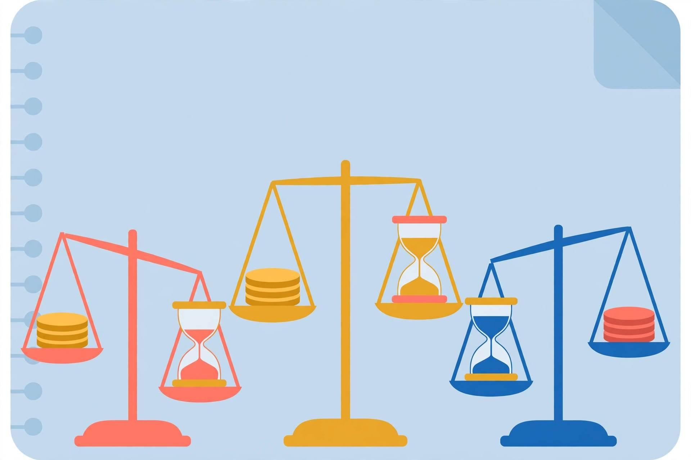

Comparing AI Affiliate Programs Beyond the Headline Rate: A 12-Month Scorecard

The biggest percentage on the page is the rate you earn. That sentence is the misconception this article exists to retire. A rate is a percentage of something, paid for some duration, inside some window, released after some hold, once some threshold is crossed. Change any one of those five settings and the same headline rate pays a different amount of money on a different date. The comparison below normalises three real programs from this site’s directory to one referred customer and twelve months, and the winner changes depending on which question you ask.
Who should not compare this way
Skip the scorecard if the product does not fit your audience. No arithmetic rescues a program your readers will not buy, and a high score on a mismatched tool produces returns, reversals, and a support burden, not income. Skip it also if you promote exactly one program and have no realistic alternative: comparison is a tool for choosing where the next unit of content effort goes, and with no choice to make, the honest answer is to spend the hour writing instead. The kill criterion for any program the scorecard surfaces: if its time to first cash, worked out below, runs past the point where you would have published three pieces promoting it, the program is borrowing your content effort interest free. Lend it knowingly or not at all.
The six inputs that replace the headline rate
Every program in the directory reduces to six inputs. The rate. The basis, meaning what the percentage applies to and whether a flat bounty replaces it. The duration, meaning how long payments continue. The window, meaning how long after a click a purchase still counts. The threshold, meaning the minimum balance before money moves. And the release mechanics, meaning holds, maturation periods, and review cycles between earning and withdrawing. A comparison that omits any of the six is a ranking of advertising copy.
One customer, twelve months, three structures
The scenario, labelled as a scenario: one referred customer pays $50 a month and stays subscribed for twelve months. The $50 figure is a modelling choice, not a price claim about any program; it exists so the three structures can be compared on identical revenue. The terms applied to it are the programs’ own, checked against their official pages in November 2026.
| Input | Descript | Pabbly | Tidio |
|---|---|---|---|
| Structure | Flat bounty, one time | Recurring percentage | Recurring percentage, rate set by your Offer |
| Published terms | $25 once per new qualifying subscription sale | 30% recurring on recurring plans, 20% flat on one-time or lifetime plans | Rate and payment period set by the applicable Offer; paid only while the company receives the customer’s payments |
| Duration | Initial subscription term only; no renewals | From the first payment through every recurring payment while the customer stays | Ends when the Offer’s payment period ends |
| Click window | Purchase within 30 days of the first click | 365 day cookie, last click attribution | 30 day cookie, credited only if yours was the last partner link clicked |
| Threshold | Paid through PartnerStack | $50 minimum payout | $50 minimum, one payout request per month |
| Release mechanics | PartnerStack monthly invoice and company review cycle | 60 day maturation period; reports generated on the 15th of each month | Monthly payment through PartnerStack |
| Scenario total, 12 months | $25 | $180 (30% of $50, twelve times) | Rate dependent: at an illustrative 30% Offer, $180; the Offer, not the category, decides |
The table’s first lesson is structural. Descript’s $25 is not a low rate; it is a different product, full payment for the first term and nothing after, which suits content that drives trial sign-ups at volume. Pabbly’s 30% looks identical to an illustrative 30% Tidio Offer on the scenario total, and the two programs are still not equivalent: Pabbly’s 365 day cookie credits purchases a 30 day window has long forgotten, and its duration runs for as long as the customer stays rather than ending with an Offer period. Same twelve month total, different risk, different fit. That is what the headline rate hides.
Time to first cash is a separate ranking
Totals are not dates. Run the same scenario forward as a calendar. The Descript bounty is earned on the qualifying sale, then passes through PartnerStack’s cycle: commissions are invoiced at the beginning of a month, sent to the company for review, and available for withdrawal once the company has reviewed and paid. A sale made early in a month can therefore wait through the rest of that month, the invoicing step, and the review before it is cash.
Pabbly’s calendar is slower at the start and stronger later. At $15 a month of commission on the scenario customer, the $50 threshold is crossed during the fourth month of payments. Each sale must also complete the 60 day maturation period, and reports are generated on the 15th of each month, so the first withdrawal on a single scenario customer lands months after the first click, long after the Descript bounty on the same click would have cleared. Add a second and third referred customer and the threshold crossing moves earlier, which is the real lesson: thresholds punish small books and barely touch large ones, so the same program is a poor first program and a fine fifth one.
Tidio sits between the two on mechanics, with monthly payment through PartnerStack and the same $50 threshold, crossed at the same scenario pace as Pabbly if the Offer rate matches, but without the 60 day maturation its terms do not impose. Two programs, one scenario total, three different first cash dates. Rank by total and by date separately, and be honest about which ranking your cash flow actually cares about this quarter.
The scorecard to rerun on any two programs
- Write the six inputs from the terms page, not the landing page. Rate, basis, duration, window, threshold, release mechanics. Any input the terms do not publish is a question to the program, not a number to guess.
- Pick one scenario customer and state it. A monthly payment and a retention period you can defend for your audience. Label it a scenario wherever the numbers appear.
- Compute the twelve month total per referred customer. Flat bounties count once. Recurring rates multiply out only for the months the duration actually covers.
- Compute time to first cash separately. Threshold divided by monthly commission gives the month the balance qualifies; add the maturation or hold period and the platform review cycle for the date.
- Score the window against your content. A 365 day window rewards slow, researched purchases. A 30 day window rewards content read at the point of decision. Neither is better in the abstract.
- Decide on fit, then totals, then dates. In that order. A program that fails fit never reaches the arithmetic, and a program that wins the arithmetic but pays in month five is a deliberate choice, not a discovery.
What success looks like: for any two programs you promote, you can state the twelve month value of one referred customer and the month the first cash arrives, each traced to a clause in the published terms. If either number comes from a landing page headline, the comparison is not finished.
Important: no income guarantees
This article is general information, not financial or tax advice. Referral and affiliate rewards are never guaranteed income, and the scenario totals here are arithmetic on published terms applied to a stated model customer, not a prediction of what any reader will earn. Terms checked against the named programs’ official pages in November 2026; confirm the current terms on the official program page before relying on them. Report any income you do receive as your local tax rules require.
, Sterling Cole, Money Writer. Earning Desk